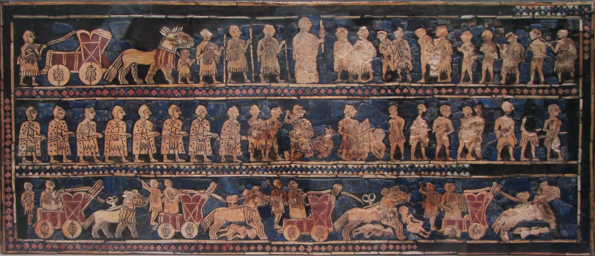
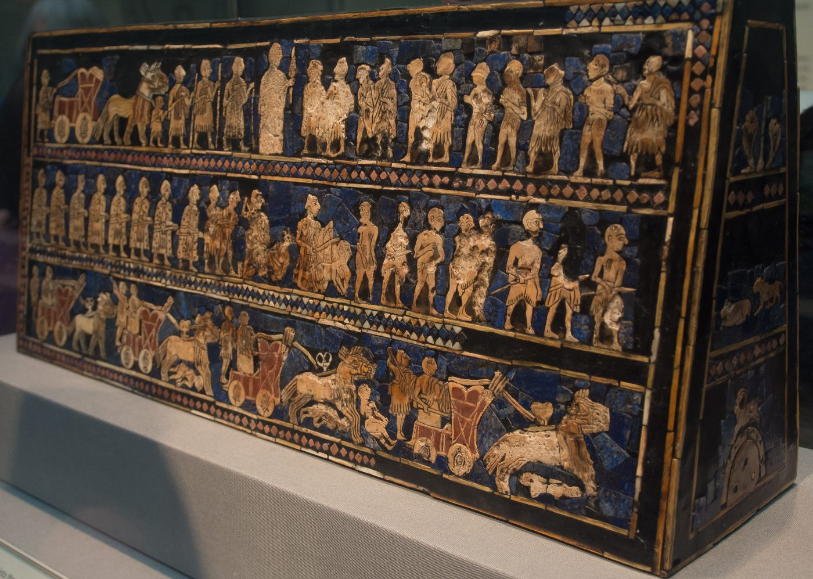
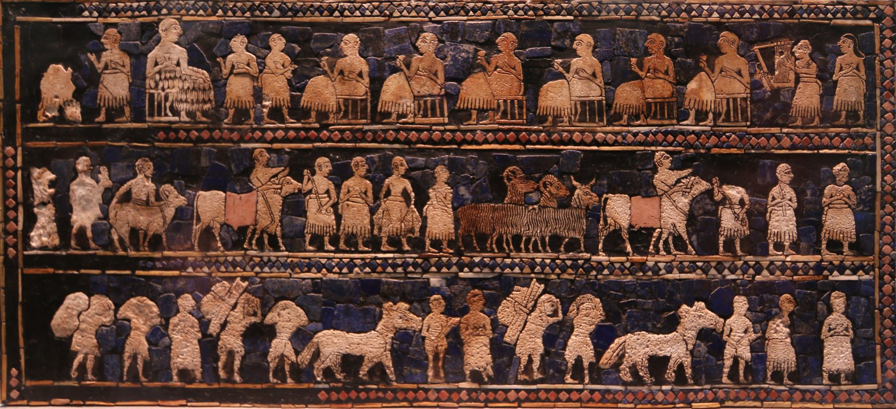

Unit 1 · The investigation of ancient sites and sources · Lesson 5
OVPRL workshop II: petroglyphs and iconography
What can sources without words tell us, and whose knowledge do we need to read them?
Year 11 Ancient History · Present with → or space · Read on a phone with R

Review · books closed · 5 minutes · press K for the timer
Six questions from Lessons 1–4
- A coin minted in 200 CE is found in undisturbed Layer 3. What does it tell us about when Layer 3 formed? In or after 200 CE: the coin is a terminus post quem, the earliest possible date for the layer. It does not mean the layer formed in 200 CE.
- Name one dating method, what it can date, and one limit. For example: radiocarbon dates once-living (organic) material such as wood, bone or charcoal, but only organic material, and it gives a range, not an exact year. Or thermoluminescence dates fired material such as pottery, but only its last heating.
- What was the purpose of the Behistun inscription? To prove Darius I’s right to rule: it presents his kingship as granted by Ahuramazda and gives his own account of how he killed Gaumâta and took the throne.
- What did the Rosetta Stone make possible, and why? The decipherment of Egyptian hieroglyphs: it carries one decree in hieroglyphic, Demotic and Greek, so Thomas Young and then Champollion (1822) could use the Greek to read the hieroglyphs.
- Layard’s 1849 painting of an Assyrian palace hall: primary or secondary, and evidence of what? Secondary for the Assyrian palace: a reconstruction, evidence of what Layard imagined in 1849, not direct evidence of how the hall looked.
- Writing: combine into one sentence, with an appositive and a but: Thucydides was an Athenian general. He was exiled for twenty years. He claims that his tests were severe. He never shows them. Thucydides, an Athenian general exiled for twenty years, claims that his tests were severe, but he never shows them.
Mark your own answers in a different colour. Which question did you find hardest?
Learning intentions and success criteria · 2 minutes
Today’s goals
- analyse petroglyphs and iconography as sources
- understand whose knowledge is needed to interpret Aboriginal rock engravings
- explain one value and one limitation of petroglyphs and of iconography
- explain why ICIP protocols matter when studying Aboriginal sites
- write a value-and-limitations paragraph for a non-written source
Syllabus outcomes: AH-11-05 analyses different types of sources for evidence to support a historical account or argument · AH-11-06 explains differing interpretations and representations of the past · AH-11-07 communicates historical understanding, applying historical knowledge, terms and concepts. Life Skills: AH-LS-08 uses sources to form conclusions about the past · AH-LS-09 identifies different interpretations of the past.
Note-making · the routine for the whole course
How to structure your notes
questions and key terms, written after
short phrases, arrows (→ leads to), abbreviations (c. = about; BCE = Before the Common Era)
- 1Rule up the page firstA cue column about a quarter of the page wide; title and date at the top; room for a summary at the bottom.
- 2Listen and look, then writeDon’t copy while a slide is being explained. Phrases, not sentences.
- 3Write your own notes at each ✎ checkpointThen compare with the model notes, one row at a time. Add what you missed in a second colour.
- 4Write the cue questions afterwardsUse exam verbs: explain, analyse, assess. To revise, cover your notes and answer the cues.
- 5Finish with a three-sentence summaryTwo checkpoints today: iconography (the ‘Standard of Ur’) · petroglyphs and ICIP. Your paragraph today is prose, not notes.
Feedback in action · 6 minutes · press K for the timer · your Lesson 4 paragraph comes back
Rewrite the move your feedback names
- 1opens with a provenance phrasewho made the source, when, where, and from what position
- 2uses precise evidence for its valuea short quotation or detail from the source, tied to the inquiry question
- 3explains purpose and perspectivewith a relating verb: presents … as, portrays, reveals
- 4judges reliability for this questionreliable for … but not for … because …, with modality and a precise evaluative verb
- 5names a limitation and ends decisivelylinks ideas with nominalisation; the last sentence answers the question, with no roadmap or summary
- Read your strength and your next step.
- Find the sentence your next step points to and underline it.
- Rewrite it underneath, using that point on the checklist.
- Check: is it a real change in thinking or language, not just a neater copy?
Key vocabulary · add to the unit word wall
Words for sources without words
| Sources | Meaning |
|---|---|
| petroglyph | An image engraved or pecked into rock. |
| iconography | The images and symbols used in art, and what they meant to the people who made them. |
| context (archaeological) | The exact place and layer an object was found in, and what was found with it. |
| reconstruction | A modern rebuilding or picture of how something looked in the past — evidence of what its maker imagined, not direct evidence of the past. |
| register | One band, or row, of pictures in a scene arranged in rows. |
| reliability | How far a source can be trusted for a particular question. |
| Culture · writing | Meaning |
|---|---|
| ICIP | Indigenous Cultural and Intellectual Property — the rights of Aboriginal and Torres Strait Islander Peoples to control their Cultural Knowledge, Practices and Property. |
| Custodian | A person or Community with the Cultural responsibility to care for Country, sites and Knowledge. |
| Country | The land and waters of an Aboriginal People, to which they are connected physically and spiritually. |
| context phrase | An opening phrase that places a source in its setting before the judgement: Within a royal tomb at Ur, … |
| nominalisation | Turning an action or quality into a noun: Woolley guessed → Woolley’s guess. |
1 · Iconography · I do — the object, and the name we gave it
The ‘Standard of Ur’: what was found, and what was guessed

- What: two long panels of shell, red limestone and lapis lazuli set in bitumen, about 50 cm long; the wood behind them had rotted away
- When: about 2600–2400 BCE
- Found: by Leonard Woolley’s team in 1927–28, in a corner of a royal tomb at Ur (southern Iraq) that had been thoroughly robbed in ancient times
- Now: in the British Museum, London
What it really was it is hard to say. … it lay in the tomb against and above the right shoulder of a man as if it had been carried by him on a pole, and the suggestion that it was a sort of standard seemed the most reasonable.
C. Leonard Woolley, Ur Excavations II: The Royal Cemetery (1934), p. 266 · a standard = a flag or emblem carried on a pole
It was named at the time of its discovery by Leonard Woolley who initially proposed that it may have been carried on a pole like a battle standard, but its original function is unknown.
The British Museum, description of “The Standard of Ur” (1928,1010.3), on Google Arts & Culture
Is the name ‘Standard’ a fact or an interpretation? How do you know?
An interpretation. Woolley chose it from where the object lay, and admitted it was hard to say what it was; the Museum says its function is unknown. Others have suggested different uses, for example the sound box of a musical instrument, but none has been proved. Even the sloping shape on display is a modern mount, based on Woolley’s reading of the crushed end pieces.
1 · Iconography · I do — what can we see, and what do we think it means?
Reading the ‘War’ panel, row by row
| Row | I see (only what is there) | I think (an inference: how sure?) |
|---|---|---|
| Top | a figure taller than the rest, in the centre, his head reaching the border · an empty wagon behind him · men without clothes, arms behind their backs, led towards him | a king (bigger = more important), receiving prisoners after a victory · Woolley: “… in the centre of the top row, stands the king, distinguished by his greater height …” |
| Middle | a line of men in matching spotted cloaks and helmets, holding weapons · further along, fighting, and men without clothes being led away | an organised army in uniform · defeated enemies taken prisoner (fairly sure) |
| Bottom | four wagons on wheels, each with two men, pulled by animals · bodies on the ground under them · the animals on the left walk, those on the right run | war chariots charging over the dead enemy: the battle itself, shown as movement (fairly sure) |
Images: BabelStone / LeastCommonAncestor (CC BY-SA 3.0). Full details on the last slide.
1 · Iconography · I do — think aloud · use the OVPRL routine on page 2 of your booklet
OVPRL on the ‘War’ panel
Inquiry question: How useful is the ‘War’ panel for understanding war and kingship at Ur?
Origin: who made it, when and where?
Unknown craftworkers, about 2600–2400 BCE · found by Woolley’s team in 1927–28 in a robbed royal tomb at Ur · no words, so no owner is named: costly materials and a royal tomb suggest the ruling elite (an inference)
Value: what can it tell us, for this inquiry?
How war and kingship were pictured: chariots, uniformed soldiers, bound prisoners brought to the largest figure · Woolley (1934) called it “the first record that we possess of the Sumerian army” · the soldiers’ helmets look like real copper helmets Woolley found in another royal grave (PG 789)
Purpose: why was it made, and for whom?
Probably to display royal power and victory: the largest figure receives the prisoners · for a royal or elite owner, and buried with the dead · its exact use is unknown
Reliability: how far can we trust it, and for what?
Reliable for how Ur’s rulers probably wanted victory and kingship to be seen, and for equipment such as the soldiers’ helmets · not for any real battle, because it is a celebration with no names, place or date
Limitations: what can it not tell us?
What the object was for (‘Standard’ is Woolley’s guess) · who the king was, or whom he fought · the losers’ side of the story · the mount’s sloping shape and the arrangement of the end panels are modern
The ‘War’ panel is reliable for how Ur’s ruling elite probably wanted war and kingship to be seen, but not for a particular battle, because it is a celebration without words.
Notes checkpoint 1 of 2
Iconography: the ‘Standard of Ur’
2 · Petroglyphs · We do — read together · text only, on purpose
Murujuga: the petroglyphs, in the Custodians’ own words
- Where: Murujuga, the Burrup Peninsula and Dampier Archipelago, in the Pilbara region of Western Australia
- Whose: the Ngarda-Ngarli, five Traditional Owner and Custodial groups: the Ngarluma, Mardudhunera, Yaburara, Yindjibarndi and Wong-Goo-Tt-Oo peoples, represented by the Murujuga Aboriginal Corporation (MAC)
- How many: an estimated one to two million petroglyphs
- Recognised: inscribed on the UNESCO World Heritage List in July 2025, as the Murujuga Cultural Landscape
Custodians decide what is shared, and how. MAC asks visitors: “We also ask that our visitors abstain from taking or publishing photographs and video of humanoid rock art figures due to cultural restrictions.”
[How many] With an estimated one to two million images, Murujuga is home to one of the largest, densest and most diverse collections of rock art engravings, also called petroglyphs, in the world. [How old] Some of the petroglyphs are estimated to be more than 50,000 years old, whilst some are much more recent … [Still living] The ‘stories from the stones’ of Murujuga are still relevant today. They have not been lost to history but instead are a key component of the living culture of the contemporary Aboriginal Custodians of the land.
Murujuga Aboriginal Corporation, murujuga.org.au: [How many] “About Murujuga” · [How old] “About the Murujuga Cultural Landscape” · [Still living] “World Heritage Listing” · MAC speaks for the Ngarda-Ngarli, the Traditional Owners and Custodians
Who is speaking in these extracts, and why does that matter for OVPRL?
The Custodians themselves, through their own corporation. They hold the Knowledge of what the engravings mean and decide what is shared, so their published words are the most reliable public source on Murujuga’s meaning, though they share only what they choose to.
2 · Petroglyphs · We do — discuss in pairs, then cold call
What can outsiders reliably conclude, and what must come from Custodians?
[NSW National Parks] With over 800 Aboriginal sites recorded across Ku-ring-gai Chase National Park, each one is a visible reminder of the rich Aboriginal heritage of the region. … Here, you’ll make out the outlines of animals and human figures. [Metropolitan Local Aboriginal Land Council] Over 4500 sites of cultural significance are registered within Metro’s boundaries …
NSW National Parks and Wildlife Service, “Basin Aboriginal art site”, Ku-ring-gai Chase National Park · Metropolitan Local Aboriginal Land Council (Sydney), “Culture & Heritage”
The park service describes “the outlines of animals and human figures”. Is that what the engravings mean?
No. It is what an outsider can see. What a figure is, which story it belongs to and who may know it is Cultural Knowledge held by Custodians.
- where recorded engravings are, and roughly how many (but some places are restricted, and their locations are not shared)
- how they were made: engraved or pecked into rock
- what shapes they appear to show (to an outsider, outlines like animals, people and sea life)
- rough ages, as estimates only, never exact years
- whether the rock is being damaged (scientific monitoring, which MAC runs with the WA Government)
- what an engraving means, and the stories and Lore it belongs to
- which images and places may be seen, photographed or shared, and by whom (some places are for men or women only)
- how the sites should be cared for, visited and recorded today
An outsider can describe a petroglyph; only its Custodians can say what it means, and whether it should be shared.
2 · ICIP · We do — Indigenous Cultural and Intellectual Property
ICIP: whose Knowledge, and whose rules?
ICIP means all aspects of Aboriginal and Torres Strait Islander peoples’ traditional knowledge and cultural expressions. … Aboriginal and Torres Strait Islander laws and protocols say how knowledge and culture can be shared and used.
Arts Law Centre of Australia, “Indigenous Cultural and Intellectual Property (ICIP)”, information sheet (last reviewed 2024) · protocols = the rules for doing something properly
ICIP protocols include Cultural Knowledges, Cultural Practices and Cultural Property.
NSW Education Standards Authority (NESA), Ancient History 11–12 Syllabus (2024), List B: Ancient Australia, p. 34 · “Knowledges” is plural: each Community has its own
what things mean: stories, Lore, knowledge of Country and of places
At Murujuga: MAC writes, “The rock art tells the stories of our country and intrinsic link to it.”
ceremonies, ways of caring for Country, and the rules about who may see, do or share what
At Murujuga: some places are for men or women only, and some figures must not be photographed or shared.
the engravings, sites and objects themselves, and the images and recordings made of them
At Murujuga: visitors must not remove stones, shells or artefacts from Country; photographs of some figures are Custodians’ to control.
So why does this site show no photographs of Murujuga? Because recording and sharing images is part of ICIP: under ICIP principles Custodians have the right to control how their Culture is recorded and shared, and MAC has asked people not to publish some of them.
2 · We do — build the T-chart together · I scribe, you supply each point
Sources without words: value and limitations
| Source | Value: what it can tell us | Limitations: what it cannot |
|---|---|---|
| Petroglyphs | made by people of the time, in the place itself, sometimes over thousands of years · show what mattered to their makers (animals, people, sea life) and how environments changed · belong to a living Culture whose Custodians can explain them | hard to date: ages are estimates, based on weathering and on extinct animals shown · meaning cannot be read by outsiders from the image alone: it is Cultural Knowledge, shared only under protocols · weathering and damage |
| Iconography | shows how makers and patrons wanted the world to be seen (a king’s victory, a feast) · records details words leave out (dress, weapons, chariots) · can be checked against finds (the helmets) | no words: meaning must be inferred, and people read the same image differently · shows what the patron wanted, not everyday life · may be restored or rearranged (the Standard’s modern mount) |
One rule for both: a picture shows, but someone chose what to show, and someone else has to interpret it.
Notes checkpoint 2 of 2
Petroglyphs and ICIP
3 · You do · choose one source · check first
Choose your source: the rock engravings or the ‘Peace’ panel
Murujuga, from the Custodians’ published words on slide 11 (or the Sydney-region engravings, from the park service and Land Council extracts on slide 12). Text only.
How useful are the Murujuga petroglyphs for understanding the past of the people of Murujuga, and whose knowledge is needed to interpret them?
The other long side of the ‘Standard of Ur’, from the same tomb.
How useful is the ‘Peace’ panel for understanding kingship at Ur?
Check first: what will your context phrase say?
Within a robbed royal tomb at Ur, … · Engraved into the rocks of Murujuga, where Custodians still hold their meaning, …

On one side the king and the royal family are seen at feast. … servants wait on them, and at one end of the scene is a musician playing on a small harp, … in two lower rows attendants are shown bringing in spoils captured from the enemy and food-supplies for the banquet …
C. Leonard Woolley, Ur of the Chaldees (1929), pp. 84–85 · Woolley’s reading of the panel, written for the general public · in his 1934 report he calls the instrument a lyre
3 · You do · Writing focus · 4 minutes · I do → We do → apply it in your paragraph
Writing focus: turn the action into a noun, then build on it
Nominalisation turns an action (a verb) into a noun group. The noun group can then start the next sentence and carry a judgement.
Worked example · written for this lesson
Verb: Layard reconstructed an Assyrian palace hall in a painting of 1849.
Noun group: Layard’s reconstruction of the hall …
Layard’s reconstruction of the hall is evidence of what he imagined in 1849, not direct evidence of how the hall looked.
Not a fragment with no main verb: Layard’s reconstruction of the hall in 1849.
Nominalise the verb in bold, then finish the new sentence:
Thomas Young and then Champollion deciphered hieroglyphs with the help of the Rosetta Stone’s Greek text. → Young’s and then Champollion’s … of hieroglyphs drew on …
Young’s and then Champollion’s decipherment of hieroglyphs drew on the Greek text of the Rosetta Stone.
In your paragraph: at least one nominalisation that starts a sentence and carries a judgement (This dependence on Custodians … · The panel’s …).
Keep who acted: Layard’s reconstruction, not just the reconstruction.
Your Writing toolkit (booklet pages 3–4): nominalisation pairs.
3 · You do · 15 minutes · press K for the timer · OVPRL notes 5 · paragraph 8 · share 2
OVPRL notes, then one value-and-limitations paragraph
- OVPRL notes on your source, using the OVPRL routine on page 2 of your booklet (5 minutes).
- One connected paragraph on its value and limitations for your inquiry question (8 minutes). Include:
- a context phrase to open, such as Within a royal tomb …
- at least one nominalisation that starts a sentence (Woolley’s guess, this dependence on Custodians)
- a judgement: reliable for … but not for … because …
Deconstructed: verb how useful (evaluate) · topic: the ‘Peace’ panel (B) or the Murujuga petroglyphs (A) · limits: for understanding kingship at Ur (B); for understanding the past of the people of Murujuga, and whose knowledge is needed to interpret them (A) · do: OVPRL notes, then one value-and-limitations paragraph that ends on a judgement.
Use the labelled ‘War’ panel (slide 8) as your model and the T-chart (slide 14). Start with: Within …, the source … · Its value lies in … · However, it cannot tell us … · It is reliable for … but not for … because …
Evaluate the claim: ‘Images are more reliable than texts because they show rather than tell.’ Use the ‘Standard of Ur’ and one written source from Lesson 4.
When you finish, swap with a partner and tick their checklist. Two of you will read your paragraphs aloud.
3 · You do · 2 minutes · two students read theirs aloud, then compare
Compare: two model paragraphs
Engraved into the rocks of Murujuga, on the Burrup Peninsula and Dampier Archipelago of Western Australia, an estimated one to two million petroglyphs form one of the largest collections of rock engravings in the world. Their value lies in their continuity: the Murujuga Aboriginal Corporation writes that some are estimated to be more than 50,000 years old while others are much more recent, so together they record people’s lives through great environmental change. Yet their meaning is Cultural Knowledge held by the Ngarda-Ngarli, the Traditional Owners and Custodians, who decide under their own protocols what may be shared. Outsiders can therefore reliably describe how the engravings were made and what shapes they appear to show, but not what they mean, because that Knowledge belongs to a living Culture rather than to the image alone. This dependence on Custodians’ Knowledge is not a weakness of the source but a reminder that, for Aboriginal sites, the most reliable interpretation comes from the people whose Culture made them.
Within a robbed royal tomb at Ur, Leonard Woolley’s team found in 1927–28 the inlaid panel now called the ‘Peace’ side of the ‘Standard of Ur’, made about 2600–2400 BCE by unknown craftworkers. Its value for understanding kingship lies in its careful staging: the largest seated figure drinks with companions while a musician plays a lyre, and below them two rows of attendants lead animals and carry loads, which Woolley read as supplies for the banquet. This display of abundance suggests that the panel was made to present a ruler as the source of plenty, for an elite owner, before it was buried in a royal tomb. It is therefore reliable evidence of how kingship at Ur was meant to be seen, but not of how ordinary people lived, because no words identify the figures and the scene shows only the ruler’s view. Its limitations are deepened by modern intervention: Woolley rearranged the front of the bottom row and admitted that “the whole corner therefore is a reconstruction”, and the object’s original function is still unknown.
Context phrase · places the source before judging it
Nominalisation · packs an idea into a noun the sentence can build on
Finish your notes If time · or at home
Summary: three sentences
- What can iconography such as the ‘Standard of Ur’ tell historians, and what limits it?
- Why can outsiders not read the meaning of Aboriginal rock engravings from the image alone?
- Why do ICIP protocols matter when studying Aboriginal sites?
Iconography such as the ‘Standard of Ur’ shows how rulers wanted war and kingship to be seen, but with no words its meaning must be inferred, and even its name and shape are modern interpretations. The meaning of Aboriginal rock engravings such as those at Murujuga is Cultural Knowledge held by their Custodians, so outsiders can describe the shapes but cannot read what they mean. ICIP protocols matter because Custodians have the right to decide how their Knowledge, Practices and Property, including images of their sites, are shared and used.
Check · hinge question · 3 minutes · hold up A, B, C or D
Why is the meaning of many rock engravings not available to outside researchers?
- AThey are so old that their meaning has been lost
- BCustodians hold their meaning as Cultural Knowledge and decide what is shared
- CResearchers have not yet studied them closely enough to work them out
- DThey were made as decoration, so there is no meaning to find
B. The meaning belongs to a living Culture, and Custodians decide what is shared. A: age alone is not the barrier; at Murujuga, for example, the stories “are still relevant today”. C: they have been recorded and studied for decades, but study can describe shapes, not supply meanings. D: they do have meanings; outsiders just aren’t the ones who hold them.
Exit ticket · 3 minutes · before you leave
Iconography: one value and one limitation
One thing iconography can tell historians is … for example …
One thing it cannot tell us is … because …
1 · how its makers or patrons wanted something to be seen, or a detail words leave out, with a named example (the ‘War’ panel’s king and prisoners; the soldiers’ helmets). 2 · a limit tied to having no words or to a modern restoration: its meaning must be inferred, it shows only the patron’s view, or (the ‘Standard’) its purpose is unknown and its shape is a modern mount.
Then check yourself against today’s three “I can” statements. Next lesson: what if the source itself is a fake? Testing authenticity.
Practice and review · 1 of 3 · true, false, justify
True or false? Justify your answer
- 1‘Standard’ is the name the people of Ur gave to the object. False — it was Leonard Woolley’s guess in the 1920s, from where the object lay; its original function is unknown.
- 2The Murujuga petroglyphs can be dated to an exact year with radiocarbon dating. False — an engraving is cut into rock, not once-living material, so radiocarbon cannot date it directly; and radiocarbon gives a range, never an exact year.
- 3The sloping shape of the ‘Standard of Ur’ on display today is a modern restoration. True — the wood rotted away; the mount follows Woolley’s reading of the crushed end pieces, and the end panels’ arrangement is speculative.
- 4An outsider can work out what an Aboriginal rock engraving means by looking at it closely. False — an outsider can describe its shapes; its meaning is Cultural Knowledge held by Custodians.
- 5The ‘War’ panel is useless to historians because it shows only the winners. False — reliable for what? It is strong evidence of how rulers wanted victory to be seen, weak evidence of a real battle.
- 6ICIP covers photographs and recordings of sites, not only the sites themselves. True — under ICIP principles, Custodians have the right to control how their Culture is recorded and shared.
Practice and review · 2 of 3 · writing
Practise the moves
Combine into one sentence that opens with a context phrase and uses a nominalisation: Woolley found the object in a royal tomb. He guessed that it was a standard. The name stuck.
Within a robbed royal tomb at Ur, Woolley found an inlaid object whose position beside a man’s shoulder prompted his guess that it was a standard, and that guess became the name it still bears.
Finish for the ‘Peace’ panel: It is reliable for … but not for … because …
The ‘Peace’ panel is reliable for how kingship at Ur was meant to be seen, but not for how ordinary people lived, because no words identify the figures and it shows only the ruler’s view.
Turn the first sentence into a noun group that starts the second: The wood behind the panels rotted away. … is one reason the sloping shape on display is a modern mount.
The decay of the wood behind the panels is one reason the sloping shape on display is a modern mount.
Evaluate the claim: ‘Images are more reliable than texts because they show rather than tell.’
The claim is only partly convincing. Images can record what texts leave out: the ‘War’ panel shows the helmets, cloaks and chariots of an army, and Woolley found real copper helmets like the soldiers’ ones in another royal grave. Yet an image also “tells”, because someone chose what to show: the panel stages a king’s victory and shows the defeated only as naked captives and bodies under the chariots, never their side of the story, just as Darius’s Behistun inscription tells only the winner’s story. Images are also harder to read than texts, since without words their meaning must be inferred, and their names and shapes may be modern, as the ‘Standard’ itself shows. For Aboriginal rock engravings, the meaning cannot be read from the image at all, but is held by Custodians. Images are therefore not more reliable than texts in general; like texts, they are reliable for some questions and not others.
Practice and review · 3 of 3 · cover your notes and answer from memory
Quick checks
- Explain why ‘Standard’ is an interpretation, not a fact. Woolley chose the name from where the object lay, by a man’s shoulder as if carried on a pole; he admitted it was hard to say what it was, and the British Museum says its function is unknown.
- Analyse what the ‘War’ panel shows about kingship. The tallest figure, in the centre, receives bound prisoners while chariots and uniformed soldiers fight below: the ruler is shown as a victorious war leader with an organised army.
- Assess the ‘War’ panel as evidence for war at Ur. Reliable for how rulers probably wanted war and victory to be seen, and for some equipment (the helmets look like real finds); not for any real battle, because it has no words, names, place or date and shows only the winners.
- Explain one value and one limitation of petroglyphs. Value: made in place by people of the time, recording change over thousands of years. Limitation: hard to date (ages are estimates), and their meaning cannot be read by outsiders from the image alone.
- Explain why outsiders cannot read the meaning of an Aboriginal rock engraving from the image alone. Its meaning is Cultural Knowledge held by Custodians in a living Culture, and shared only under their protocols.
- Explain what ICIP covers, with an example. The rights of Aboriginal and Torres Strait Islander Peoples to control their Cultural Knowledge, Practices and Property, including images and recordings: the Murujuga Aboriginal Corporation asks visitors not to photograph or publish humanoid figures.
- Analyse why ICIP protocols matter when studying Aboriginal sites. Custodians decide what is shared, so following their protocols respects their rights, keeps restricted Knowledge from spreading and keeps our sources accurate: use Community-endorsed sources such as the Murujuga Aboriginal Corporation.
Sources and credits
Where everything comes from
Murujuga Aboriginal Corporation (for the Ngarda-Ngarli, Traditional Owners and Custodians of Murujuga), murujuga.org.au: “About Murujuga”, “About the Murujuga Cultural Landscape”, “World Heritage Listing”, “About Our Land”, “Rock Art Strategy” and “Rock Art Tours and Cultural Training”; short extracts quoted with attribution, © Murujuga Aboriginal Corporation. No images reproduced.
C. L. Woolley, Ur of the Chaldees (London: Ernest Benn, 1929), pp. 82–86, scan on archive.org; C. L. Woolley, Ur Excavations II: The Royal Cemetery (British Museum and University of Pennsylvania Museum, 1934), pp. 7, 61–62, 243, 255, 266–269, scan on archive.org. The British Museum, “The Standard of Ur” (1928,1010.3), on Google Arts & Culture. Short extracts, quoted for study.
Arts Law Centre of Australia, “Indigenous Cultural and Intellectual Property (ICIP)” (last reviewed 2024). NSW National Parks and Wildlife Service, “Basin Aboriginal art site” (nationalparks.nsw.gov.au), quoted for its words only; not linked, because the page shows photographs of the engravings. Metropolitan Local Aboriginal Land Council, “Culture & Heritage”.
Teacher resource: Investigating the Past – Archaeological & Written Sources (class notebook). The British Museum’s text on the Standard of Ur on Khan Academy (CC BY-NC-SA), quoted in the teacher notes.
The model paragraphs, model notes, examples and summary were written for this lesson.
Outcomes and content: NSW Education Standards Authority (NESA), Ancient History 11–12 Syllabus (2024). © NESA. ICIP protocols: pp. 8 and 34.
ICIP: this public site shows no photographs, drawings or reproductions of Aboriginal or Torres Strait Islander rock art, sites or Cultural material.
- The ‘Standard of Ur’, ‘War’ side · Photo: BabelStone, adjusted by LeastCommonAncestor · CC BY-SA 3.0 · source
- The ‘Standard of Ur’ as displayed today (cropped) · Photo: Denis Bourez · CC BY 2.0 · source
- The ‘Standard of Ur’, ‘Peace’ side · Photo: Geni, adjusted by LeastCommonAncestor · CC BY-SA 3.0 · source

_(2).jpg){kind=link}

All images are openly licensed, and were resized for the web (the museum view was also cropped). Each is shared under the licence shown.